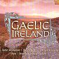

Celtic Lyrics Corner > Compilations > Gaelic Ireland
|
 |
Gaelic Ireland
(2003) |
| Tracks : |
1.
D�lam�n
- Altan
2. Sliabh Geal gCua Na F�ile - Kevin Conneff 3. Taimse 'Im Chodladh - Brian Kennedy 4. Na Ceannabh�in Bh�na - Cran 5. Aisling Gheal - Diarmuid � S�illeabh�in 6. Sliabh Na mBan - Brendan Begley 7. �ch�n An Gorta M�r - R�is�n Elsafty 8. Johnny Seoighe - Se�n 'AcDhonncha 9. Cill Chais - The Dubliners 10. An Bins�n Luachra - Se�n De H�ra 11. Nead Na Lachan - �il�s Kennedy 12. Na Connerys - Ann Mulqueen, Odi & Sorcha N� Ch�illeachar 13. M�ir�n De Barra - Finola � Siochr� 14. B�al Atha h-Amhnais - Na Fil� 15. Bruach Na Carraige B�ine - Ger Wolfe 16. Casadh An tS�g�in - Lasairfh�ona N� Chonaola 17. Eochaill - Daithi � S� 18. Cruc�n Na bP�iste (Lament For Katie) - Katie McMahon |